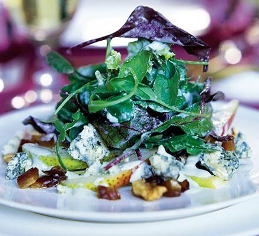

Pear and stilton salad

Description
Gary Rhodes' perfect starter for a Boxing day lunch, made with lots of leftovers from the day before.
Ingredients
- 3 ripe pears
- Juice of 1 lime
- 100g creme fraiche
- 300g stilton, crumbled, room temperature
- 1-2 tbsp ginger syrup (from a jar of ginger in syrup)
- 100g broken walnuts
- 12 dates (Medjool are good), stoned and chopped
- Walnut oil for drizzling
- 225g mixed salad leaves
- 1 large watercress, divided into sprigs
Method
- Cut the pear quarters into thin slices and toss in a bowl with the lime juice to help protect their natural colour. Blend the crème fraîche with half the stilton, ginger syrup to taste, and enough water (3-4 tbsp) to give a smooth, thick coating consistency. (Don’t add too much water or it may separate.)
- Scatter the pear slices over six serving plates and follow with the walnuts, dates and remaining cheese. Can be prepared to this stage up to an hour ahead.
- Drizzle each salad with a little of the dressing and some walnut oil. Season with a grinding of pepper – you shouldn’t need salt, as the cheese is salty. Mix the salad leaves and watercress very lightly with just a bit more dressing – some leaves should be touched by the dressing, some untouched. Gently pile the leaves on top of each salad.